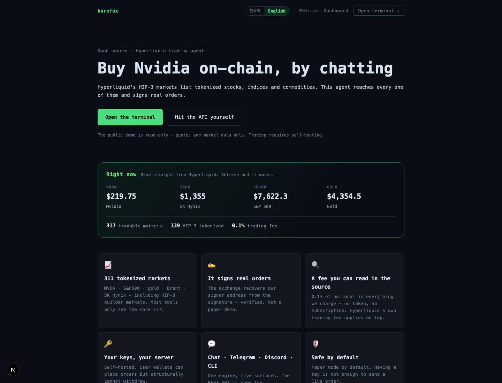
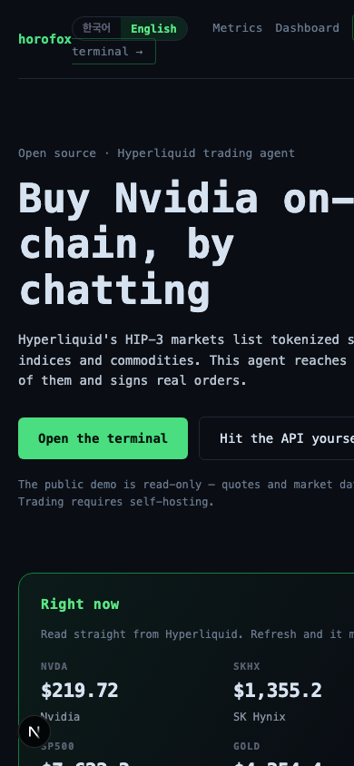
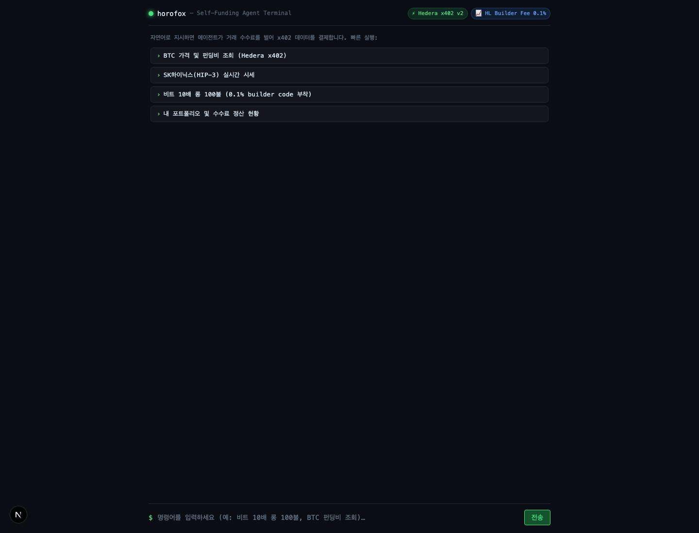
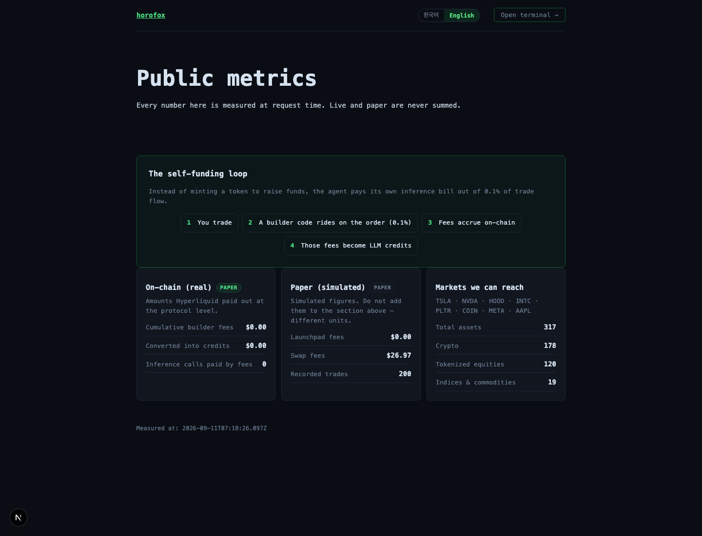
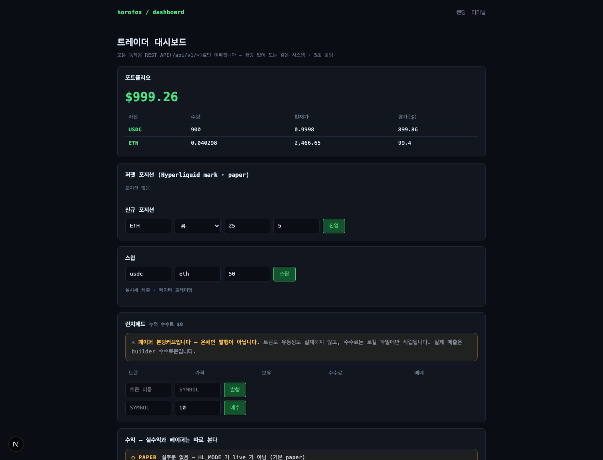
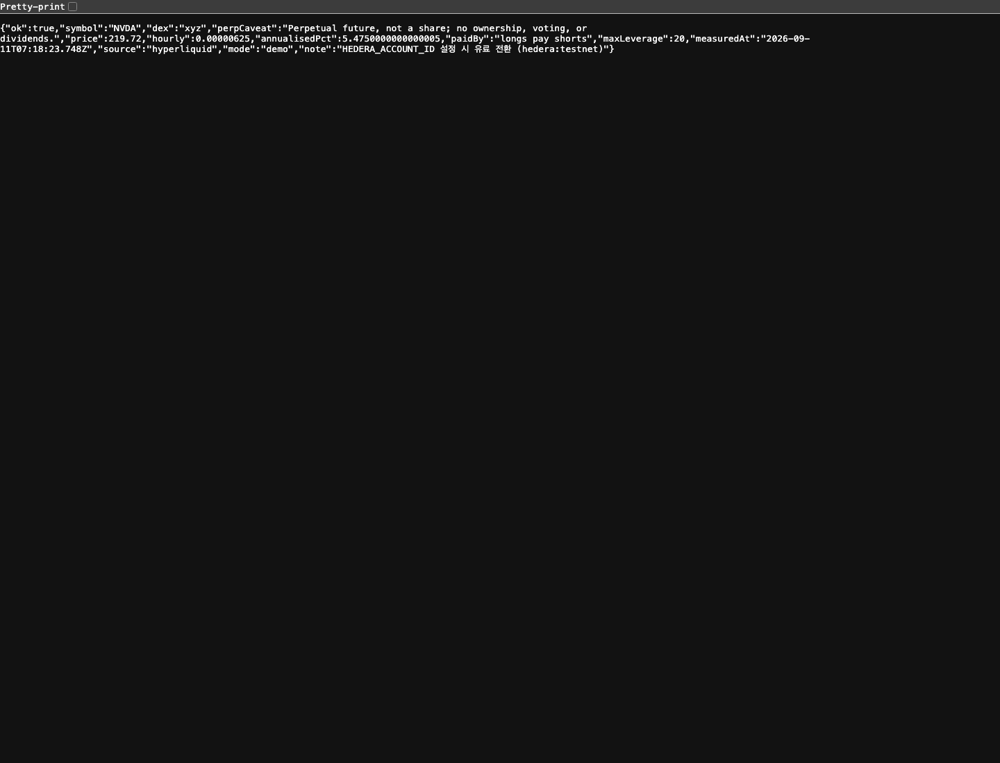

horofox 구현 결과 보고서
Astra가 정리한 실행 계획을 기준으로 Luna가 x402 결제 경로와 제품 표면을 구현했습니다. 이 문서는 현재 작업 트리의 실제 코드, 테스트 결과, 수동 화면 캡처, 그리고 아직 외부 환경이 필요한 마지막 검증을 한 곳에 모은 최종 보고서입니다.
1. 최종 판정
코드와 로컬 검증은 완료
클라이언트는 잘못된 Hedera x402 견적을 서명 전에 거절하고, 서버는 결제 검증이 끝난 뒤에만 도구를 실행하며, 성공 시 정산 영수증을 PAYMENT-RESPONSE로 전달합니다. 무료 모드에서는 NVDA를 포함한 HIP-3 brief 응답이 실제 Hyperliquid 데이터로 동작합니다.
실제 유료 거래는 아직 미검증
현재 환경에는 배포된 유료 서비스, Blocky402 facilitator 설정, 자금이 있는 Hedera testnet 지갑이 없습니다. 따라서 실제 결제 영수증을 만들어 ETHOnline 파트너 요건을 충족했다고 주장하지 않았습니다.
npx tsc --noEmit --incremental falsebrief?symbol=NVDA demo 응답2. 구현된 변경 사항
| 영역 | 파일 | 마무리된 동작 | 상태 |
|---|---|---|---|
| 결제 클라이언트 | lib/x402/client.ts | v2 exact만 허용, Hedera 네트워크와 USDC 자산을 정확히 확인, 양의 정수 micro-unit만 수락, 예산 거절 시 signer 호출 없이 원래 402 반환. | 완료 |
| 결제 서버 | app/api/x402/route.ts | 가짜 payment header가 demo/free 경로로 우회하지 못하도록 fail-closed. payment-verified 후 도구 실행, 성공 후 settlement, 실패 시 cancellation/failure headers. | 완료 |
| 상품 API | lib/x402/catalog.tsapp/api/x402/route.ts | brief 도구 추가. symbol, limit(1–10), equitiesOnly를 받고 가격·시간당 펀딩·연환산·지불 방향·레버리지·측정시각을 반환. | 완료 |
| 발견성 | scripts/test-discovery.ts | manifest, /llms.txt, OpenAPI, MCP가 모두 동일한 5개 도구와 brief 파라미터를 노출하는지 확인. | 완료 |
| 데모 | scripts/demo-loop.ts | 가짜 거래/수수료/정산을 제거. testnet 지갑, 유료 URL, paid retry, PAYMENT-RESPONSE receipt가 모두 있어야 성공. | 완료 |
| 문서 | README.mdSUBMISSION.mdHACKATHON.md | Blocky402를 검증된 사실처럼 표현하지 않고, testnet과 receipt-gated 상태를 명시. 실제 유료 거래·mainnet·수익 주장을 보류. | 완료 |
| 검증 스크립트 | scripts/test-x402-safety.tsscripts/test-x402-settlement.ts | 견적 오염, 예산 차단, signer 미호출, verify/settle 1회, 영수증 decode, handler 실패, 가짜 헤더 quota 안전성을 직접 확인. | 완료 |
3. 결제 흐름과 실패 경계
402의 PAYMENT-REQUIRED를 엄격히 decode
거절되면 signer와 retry를 모두 중단
facilitator가 payment signature 확인
verified 상태일 때만 brief/price 실행
성공 receipt와 PAYMENT-RESPONSE 반환
클라이언트가 거절하는 견적
- v2가 아닌 버전
exact가 아닌 scheme- 예상 네트워크와 다른
hedera:* - testnet/mainnet과 다른 Hedera USDC asset
- 0, 음수, 소수, 안전 범위를 넘는 amount
서버가 닫는 우회 경로
- payment header가 있어도 paid mode가 꺼져 있으면 무료 실행으로 내려가지 않음
- 무료 quota는 unpaid 요청만 차감
- payment-error에서는 도구를 실행하지 않음
- handler가 실패하면 cancellation을 시도하고 실패 응답을 반환하며 성공 settlement로 표시하지 않음
4. brief API 계약
요청
GET /api/x402?tool=brief
&symbol=NVDA
&limit=1
&equitiesOnly=true유료 모드에서는 동일한 URL에 x402 client가 결제 signature를 붙여 재요청합니다. demo 모드에서는 mode:"demo"가 추가됩니다.
응답 필드
{
ok: true,
symbol: "NVDA",
dex: "xyz",
perpCaveat: "Perpetual future, not a share; ...",
price: 219.72,
hourly: 0.00000625,
annualisedPct: 5.475,
paidBy: "longs pay shorts",
maxLeverage: 20,
measuredAt: "...",
source: "hyperliquid"
}발견 경로
/.well-known/x402 · /llms.txt · /openapi.json · MCP catalog. 모두 5개 도구를 공유하고 brief의 limit·equitiesOnly를 노출합니다.
5. 검증 결과
| 검증 | 명령 | 관찰 결과 |
|---|---|---|
| Strict quote / budget | npx tsx scripts/test-x402-safety.ts | 통과. 유효한 testnet USDC만 허용, 잘못된 network/scheme/asset/amount 거절, budget 거절 시 요청 1회·signer 0회. |
| Settlement / failure | npx tsx scripts/test-x402-settlement.ts | 통과. verify 1회, handler 후 settle 1회, decode 가능한 성공 PAYMENT-RESPONSE, handler 실패 시 추가 settlement 없음. |
| Client regression | npx tsx scripts/test-x402-client.ts | 통과. wallet 미설정 안내, missing quote 거절, server 402 amount 파싱. |
| Discovery | npx tsx scripts/test-discovery.ts | 통과. manifest/llms/OpenAPI/MCP 전부 200 및 계약 일치. |
| Full regression | scripts/test-*.ts 선택적 장기·배포 테스트 제외 | 34개 실행, NO-REGRESSION. |
| Typecheck | npx tsc --noEmit --incremental false | 통과. |
| Build | npm run build | fresh .next에서 통과, 19개 정적 페이지 생성. 기존 dependency 경고 2건은 exit 0. |
| Whitespace | git diff --check | 통과. |
| Manual QA | GET /api/x402?tool=brief&symbol=NVDA... | HTTP 200. Hyperliquid의 price/funding/dex/leverage/timestamp 반환, demo mode 표시. |
| LSP | changed TS files diagnostics | 도구 서버가 다른 workspace cwd에 고정되어 절대 경로를 거절. tsc와 build로 대체 검증. |
6. 실제 화면과 API 캡처
캡처는 2026-09-11 로컬 Next 서버(localhost:3002)에서 생성했습니다. 동적 시세와 측정시각은 캡처 시점에 따라 달라집니다.






NVDA의 HIP-3 perpetual snapshot. perpCaveat가 주식 소유권과 perpetual을 구분합니다.7. 남은 일과 입상 가능성의 현실적인 경계
파트너 요건을 아직 증명하지 못한 이유
로컬 테스트는 facilitator를 가짜 서버로 대체해 verify/settle 흐름과 receipt 전달을 증명했습니다. 하지만 이것은 실제 Hedera testnet 결제 영수증이 아닙니다. ETHOnline Hedera AI & Agentic Payments 요건을 주장하려면 아래 세 가지가 더 필요합니다.
- Blocky402 facilitator를 사용하는 공개 배포 x402 서비스
- 자금이 있는 Hedera testnet agent wallet
- 무료 quota를 소진한 뒤 agent가 실제 유료 요청을 완료하고 받은
PAYMENT-RESPONSEreceipt
현재 판정: 제품·프로토콜 구현은 제출 가능한 상태에 가깝지만, 실제 유료 end-to-end 증거가 생기기 전까지는 Hedera 파트너상 자격과 입상 확률을 확정할 수 없습니다.
지금 남은 작업
- Blocky402 testnet facilitator URL 설정 및 확인
- Hedera testnet account/private key 주입
- 서비스 배포 후 무료 quota 소진
scripts/demo-loop.ts실행- 영상용 실제 receipt와 request/response 캡처 보관
현재 고의로 주장하지 않는 것
- 실제 mainnet 거래
- 실제 토큰 발행·소유권·배당
- 실제 builder fee 수익
- Blocky402 실사용 확인
- 가짜 receipt를 이용한 성공 데모
8. 재현 명령
# 로컬 화면 npm run dev -- -p 3002 # 보고서 open http://localhost:3002/report.html # 핵심 검증 npx tsx scripts/test-x402-safety.ts npx tsx scripts/test-x402-settlement.ts npx tsx scripts/test-x402-client.ts npx tsx scripts/test-discovery.ts npx tsc --noEmit --incremental false npm run build git diff --check # 실제 paid demo (외부 지갑·배포 설정이 있어야 성공) npx tsx scripts/demo-loop.ts
데모가 설정 부족으로 실패하는 것은 정상인가?
정상입니다. HEDERA_AGENT_ACCOUNT_ID, HEDERA_AGENT_PRIVATE_KEY, DEMO_X402_URL 또는 facilitator가 없으면 스크립트는 1로 종료하고 성공을 가장하지 않습니다. 이것이 이번 수정에서 의도한 fail-closed 동작입니다.
변경 파일 전체
HACKATHON.md README.md SUBMISSION.md app/api/x402/route.ts lib/x402/catalog.ts lib/x402/client.ts scripts/demo-loop.ts scripts/test-discovery.ts scripts/test-x402-client.ts scripts/test-x402-safety.ts scripts/test-x402-settlement.ts public/report.html public/report-assets/*.png